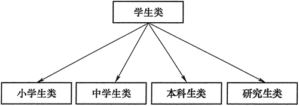
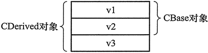

首页 > 编程笔记
C++继承和派生是什么意思（通俗易懂）
代码重用是提高软件开发效率的重要手段，因此 C++ 对代码重用有很强的支持，“继承”就是支持代码重用的机制之一。
假设教育局要编写一个学籍管理程序，推广到全国的大中小学使用。如果用面向对象的方法开发，必然要设计一个“学生”类。“学生”类包含所有学生的共同属性和方法，如姓名、学号、性别、成绩等属性，判断是否该退学、是否该奖励或处罚等方法。而中学生、本科生、研究生又有各自不同的属性和方法，如本科生和研究生有专业的属性，而中学生没有；研究生有导师的属性；中学生有竞赛、特长加分等属性，而本科生和研究生没有。
如果为每种学生都编写一个类，显然会有不少重复的代码，造成效率上的浪费。C++ 的“继承”机制就能避免上述浪费。
派生类是通过对基类进行扩充和修改得到的。基类的所有成员自动成为派生类的成员。
所谓扩充，指的是在派生类中可以添加新的成员变量和成员函数；所谓修改，指的是在派生类中可以重写从基类继承得到的成员。
派生类的成员函数不能访问基类的私有成员。
有了 “继承”机制，对于上述学籍管理程序，就可以编写一个“学生”类概括各种学生的共同特点，然后从“学生”类派生出“小学生”类、“中学生”类、“本科生类”等，如图 1 所示。
在 C++ 中，从一个类派生出另一个类的写法如下：
派生类对象占用的存储空间大小，等于基类对象占用的存储空间大小加上派生类对象自身成员变量占用的存储空间大小。
派生类对象中包含基类对象，而且基类对象的存储位置位于派生类对象新增的成员变量之前。例如以下两个类 CBase 和 CDerived，CDerived 继承了 CBase ：
显然，sizeof(CBase) 等于 8，sizeof(CDerived) 等于 12。
Harry Potter qulified for baoyan
Name: Harry Potter
ID: 118829212
Age: 19
Gender: M
Department: Computer Science
sizeof(string) = 4
sizeof(CStudent) = 16
sizeof(CUndergraduateStudent) = 20
上述程序中，CStudent 类概括了所有学生的共同特点。CUndergraduateStudent 类继承了 CStudent 类，所有 CStudent 类的成员也都是 CUndergraduateStudent 类的成员，因此第 53 行调用 GetName 成员函数是没有问题的。
此外，CUndergraduateStudent 类还添加了新成员变量 department，以及新的成员函数 QulifiedForBaoyan。
CUndergraduateStudent 类还重写了从基类继承的两个成员函数 SetInfo 和 PrintInfo。
在基类和派生类有同名成员（可以是成员变量，也可以是成员函数）的情况下，在派生类的成员函数中访问同名成员，或通过派生类对象访问同名成员，除非特别指明，否则访问的就是派生类的成员，这种情况叫“覆盖”，即派生类的成员覆盖基类的同名成员。因此，第 52 行调用的是 CUndergraduateStudent 类的 SetInfo 成员函数，第 55 行调用的是 CUndergraduateStudent 类的 PrintInfo 成员函数。
如果要访问基类的同名成员，则需要在成员名前面加“基类名::”。例如，假设 s2 是 CUndergraduateStudent 类的对象，p 是 CUndergraduateStudent 类的指针，则以下写法就调用了基类的成员函数：
基类和派生类有同名成员函数，完成类似的功能。在派生类的同名成员函数中，先调用基类的同名成员函数完成基类部分的功能，然后再执行自己的代码完成派生类的功能，这种做法非常常见。
在 Windows 面向对象的 MFC 编程、Android 系统应用程序开发等编程环境中，许多程序员编写的关键的类都必须是由编译器提供的类派生而来的，在其中往往都必须编写和基类同名的一些成员函数。而在派生类的这些成员函数中，一般都需要先调用基类的同名成员函数来完成必要的功能。
派生类和基类有同名成员函数很常见，但一般不会在派生类中定义和基类同名的成员变量，这样做会很让人困惑。
第 56 行及其后的几行输出是为了说明派生类对象占用的存储空间大小等于基类对象占用的存储空间大小加上派生类新增成员变量占用的存储空间大小。
第 56 行输出“sizeof(string) = 4，是用 Dev C ++ 编译后程序的输出结果。如果用 Visual Studio 2010 编译，输出结果会是 “sizeof(string) = 32”。这是由于不同的编译器所提供的类库对于 string 类有不同的实现方法， 因此 sizeof(string) 在不同编译器上的值是不同的。
按理说，对象占用的存储空间大小等于各成员变量占用的存储空间大小之和，那么 sizeof(CStudent) 的值应该为 13，但输出结果却是“sizeof(CStudent) = 16”，这是为什么呢？
由于计算机内部在 CPU 和内存之间传输数据都是以 4 字节（对于32位计算机）或8字节（对于64位计算机）为单位进行的，出于传输效率的考虑，应该尽量使对象的成员变量的地址是 4 或 8 的整数倍，这叫作对齐。
对于CStudent类，编译器为每个 CStudent 对象中的 char 类型成员变量 gender 补齐 3 个字节，使得 age 成员变量能够对齐，这样 CStudent 对象就变成了 16 字节。
在一些编译器中，关于对象的成员变量如何对齐是有选项可以设定的。例如在 Visual Studio 中，这个选项就是：
思考题：如何实现 string 类，可以使得 sizeof(string) = 4？这样实现的 string 类如何才能在常数时间内求得 string 对象中字符串的长度？
假设教育局要编写一个学籍管理程序，推广到全国的大中小学使用。如果用面向对象的方法开发，必然要设计一个“学生”类。“学生”类包含所有学生的共同属性和方法，如姓名、学号、性别、成绩等属性，判断是否该退学、是否该奖励或处罚等方法。而中学生、本科生、研究生又有各自不同的属性和方法，如本科生和研究生有专业的属性，而中学生没有；研究生有导师的属性；中学生有竞赛、特长加分等属性，而本科生和研究生没有。
如果为每种学生都编写一个类，显然会有不少重复的代码，造成效率上的浪费。C++ 的“继承”机制就能避免上述浪费。
基本概念
在 C++ 中，当定义一个新的类 B 时，如果发现类 B 拥有某个已写好的类 A 的全部特点，此外还有类 A 没有的特点，那么就不必从头重写类 B，而是可以把类 A 作为一个“基类”（也称“父类”），把类 B 写为基类 A 的一个“派生类”（也称“子类”）。这样，就可以说从类 A “派生”出了类 B，也可以说类 B “继承”了类 A。派生类是通过对基类进行扩充和修改得到的。基类的所有成员自动成为派生类的成员。
所谓扩充，指的是在派生类中可以添加新的成员变量和成员函数；所谓修改，指的是在派生类中可以重写从基类继承得到的成员。
派生类的成员函数不能访问基类的私有成员。
有了 “继承”机制，对于上述学籍管理程序，就可以编写一个“学生”类概括各种学生的共同特点，然后从“学生”类派生出“小学生”类、“中学生”类、“本科生类”等，如图 1 所示。
:
图1：学籍管理系统的类设计
图1：学籍管理系统的类设计
在 C++ 中，从一个类派生出另一个类的写法如下：
class 派生类名: 继承方式说明符 基类名{
...
};
派生类对象占用的存储空间大小，等于基类对象占用的存储空间大小加上派生类对象自身成员变量占用的存储空间大小。
派生类对象中包含基类对象，而且基类对象的存储位置位于派生类对象新增的成员变量之前。例如以下两个类 CBase 和 CDerived，CDerived 继承了 CBase ：
class CBase
{
int v1, v2;
};
class CDerived: public CBase
{
int v3;
};
则 CDerived 对象的存储空间如图 2 所示。

图2：派生类对象的内存空间示意
图2：派生类对象的内存空间示意
显然，sizeof(CBase) 等于 8，sizeof(CDerived) 等于 12。
程序实例
下面来看一个有两个类的简单学生管理程序。#include <iostream> #include <string> using namespace std; class CStudent { private: string name; string id; //学号 char gender; //性别，F 代表女，M 代表男 int age; public: void PrintInfo(); void SetInfo(const string & name_, const string & id_, int age_, char gender_); string GetName() { return name; } }; class CUndergraduateStudent : public CStudent //本科生类，继承了 CStudent 类 { private: string department; //学生所属的系的名称 public: void QulifiedForBaoyan() { //给予保研资格 cout << "qulified for baoyan" << endl; } void PrintInfo() { CStudent::PrintInfo(); //调用基类的 PrintInfo 函数 cout << "Department: " << department << endl; } void SetInfo(const string & name_, const string & id_, int age_, char gender_, const string & department_) { CStudent::SetInfo(name_, id_, age_, gender_); //调用基类的 SetInfo 函数 department = department_; } }; void CStudent::PrintInfo() { cout << "Name: " << name << endl; cout << "ID: " << id << endl; cout << "Age: " << age << endl; cout << "Gender: " << gender << endl; } void CStudent::SetInfo(const string &name_, const string & id_, int age_, char gender_) { name = name_; id = id_; age = age_; gender = gender_; } int main() { CStudent s1; CUndergraduateStudent s2; s2.SetInfo("Harry Potter", "118829212", 19, 'M', "Computer Science"); cout << s2.GetName() << " "; s2.QulifiedForBaoyan(); s2.PrintInfo(); cout << "sizeof(string) = " << sizeof(string) << endl; cout << "sizeof(CStudent) = " << sizeof(CStudent) << endl; cout << "sizeof(CUndergraduateStudent) = " << sizeof(CUndergraduateStudent) << endl; return 0; }在 Dev C++ 下的运行结果：
Harry Potter qulified for baoyan
Name: Harry Potter
ID: 118829212
Age: 19
Gender: M
Department: Computer Science
sizeof(string) = 4
sizeof(CStudent) = 16
sizeof(CUndergraduateStudent) = 20
上述程序中，CStudent 类概括了所有学生的共同特点。CUndergraduateStudent 类继承了 CStudent 类，所有 CStudent 类的成员也都是 CUndergraduateStudent 类的成员，因此第 53 行调用 GetName 成员函数是没有问题的。
此外，CUndergraduateStudent 类还添加了新成员变量 department，以及新的成员函数 QulifiedForBaoyan。
CUndergraduateStudent 类还重写了从基类继承的两个成员函数 SetInfo 和 PrintInfo。
在基类和派生类有同名成员（可以是成员变量，也可以是成员函数）的情况下，在派生类的成员函数中访问同名成员，或通过派生类对象访问同名成员，除非特别指明，否则访问的就是派生类的成员，这种情况叫“覆盖”，即派生类的成员覆盖基类的同名成员。因此，第 52 行调用的是 CUndergraduateStudent 类的 SetInfo 成员函数，第 55 行调用的是 CUndergraduateStudent 类的 PrintInfo 成员函数。
如果要访问基类的同名成员，则需要在成员名前面加“基类名::”。例如，假设 s2 是 CUndergraduateStudent 类的对象，p 是 CUndergraduateStudent 类的指针，则以下写法就调用了基类的成员函数：
s2.CStudent::PrintInfo(); p->CStudent::PrintInfo();第 25 行和第 30 行都调用了基类的同名成员函数。派生类的 PrintInfo 成员函数先调用基类的 PrintInfo 成员函数输出基类部分的成员信息，然后再输出新增的 department 成员信息。
基类和派生类有同名成员函数，完成类似的功能。在派生类的同名成员函数中，先调用基类的同名成员函数完成基类部分的功能，然后再执行自己的代码完成派生类的功能，这种做法非常常见。
在 Windows 面向对象的 MFC 编程、Android 系统应用程序开发等编程环境中，许多程序员编写的关键的类都必须是由编译器提供的类派生而来的，在其中往往都必须编写和基类同名的一些成员函数。而在派生类的这些成员函数中，一般都需要先调用基类的同名成员函数来完成必要的功能。
派生类和基类有同名成员函数很常见，但一般不会在派生类中定义和基类同名的成员变量，这样做会很让人困惑。
第 56 行及其后的几行输出是为了说明派生类对象占用的存储空间大小等于基类对象占用的存储空间大小加上派生类新增成员变量占用的存储空间大小。
第 56 行输出“sizeof(string) = 4，是用 Dev C ++ 编译后程序的输出结果。如果用 Visual Studio 2010 编译，输出结果会是 “sizeof(string) = 32”。这是由于不同的编译器所提供的类库对于 string 类有不同的实现方法， 因此 sizeof(string) 在不同编译器上的值是不同的。
按理说，对象占用的存储空间大小等于各成员变量占用的存储空间大小之和，那么 sizeof(CStudent) 的值应该为 13，但输出结果却是“sizeof(CStudent) = 16”，这是为什么呢？
由于计算机内部在 CPU 和内存之间传输数据都是以 4 字节（对于32位计算机）或8字节（对于64位计算机）为单位进行的，出于传输效率的考虑，应该尽量使对象的成员变量的地址是 4 或 8 的整数倍，这叫作对齐。
对于CStudent类，编译器为每个 CStudent 对象中的 char 类型成员变量 gender 补齐 3 个字节，使得 age 成员变量能够对齐，这样 CStudent 对象就变成了 16 字节。
在一些编译器中，关于对象的成员变量如何对齐是有选项可以设定的。例如在 Visual Studio 中，这个选项就是：
Projects -> Properties -> Configuration Properties -> C/C++ -> Code generation -> Struct Member Alignment
这称作结构成员对齐，默认值是 8。思考题：如何实现 string 类，可以使得 sizeof(string) = 4？这样实现的 string 类如何才能在常数时间内求得 string 对象中字符串的长度？
关注公众号「站长严长生」，在手机上阅读所有教程，随时随地都能学习。内含一款搜索神器，免费下载全网书籍和视频。

微信扫码关注公众号